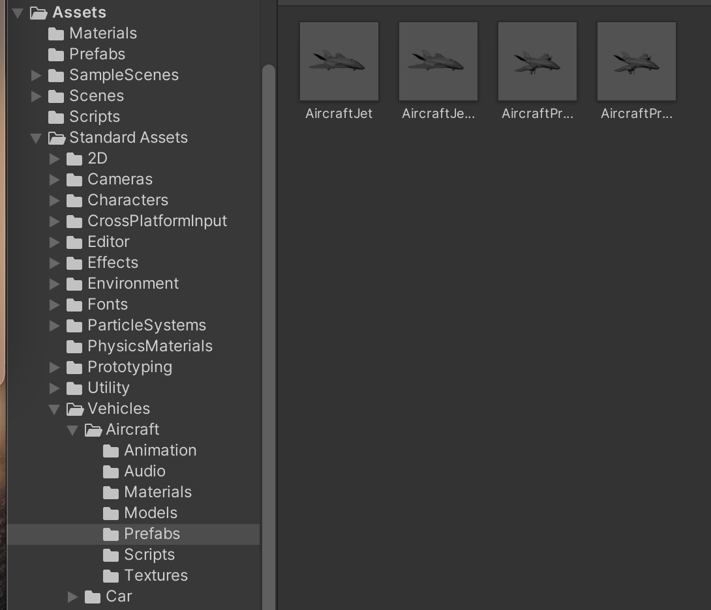
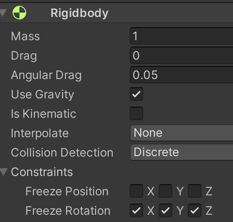
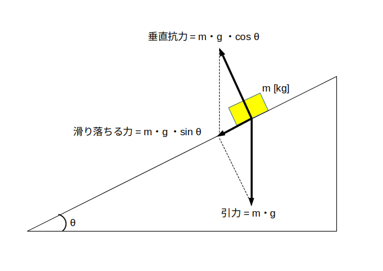

重力、反発と来たので次は摩擦を Unity を使って再現してみましょう。
まず摩擦を考える場合は球よりも箱の方が分かりやすいので、新しくシーン Scene3 を作ることにします。
7ページ目を参考に、アセットフォルダの中の Scenes フォルダの中に Scene3 を新規作成し、背景を真っ黒にして下さい。
次に箱と坂道を作成します。
まずヒエラルキー右クリック → 3D Object → Cube で箱を新規作成し、名前を「HAKO」、Position を (0,1,0)にして下さい。
また重力を使いますので Rigidbody もアタッチして下さい。
同様にヒエラルキー右クリック → 3D Object → Cube で箱を新規作成し、名前を「SAKA」、Position を (0,0,0)、Scale を (30,1,1) にして下さい。
さてこのままでは坂道になっていませんので SAKA を傾けたいと思うのですが、SAKA を傾けても HAKO は傾いてくれません。
そこで HAKO と SAKA に「親子関係」を設定します。
SAKA を親、HAKO を子供にするにはヒエラルキーの HAKO を SAKA の上にドロップします(図1)
図1. SAKA と HAKO を親子関係にする
すると SAKA の右下に HAKO が移動し、SAKA の Position や Rotation の値を変更すると HAKO も一緒に移動します。
では SAKA の Position を (5,2,0)、Rotation を (0,0,30) にして下さい。
この時の状況が図2になります。
図2. HAKO と SAKA を用意

では摩擦の設定をしていきます。
まず反発の時と同様に物理マテリアルを作ります。
多分 Scenes フォルダを開いたままにしていると思うので一つ上のフォルダに戻って下さい。
アセットフォルダの空いている部分を右クリックしてメニューを表示し、Create → Physic Material を選びます。
するとアセットフォルダ内に「New Physic Material」というアセットが出来ますので「HAKO Physic Material」に名前を変更して下さい。
次に「HAKO Physic Material」をクリックしてインスペクタを表示し、Dynamic Friction を 0.29、Static Friction を 0.29、Bounciness を 0 にして下さい。
値を設定したらアセットフォルダ内の「HAKO Physic Material」をドラッグしてヒエラルキーの「HAKO」の上にドロップして下さい。
すると HAKO のインスペクタの Box Collider の中に「HAKO Physic Material」が表示されます。
同様に「SAKA Physic Material」を作成し、Dynamic Friction を 0.29、Static Friction を 0.29、Bounciness を 0 にし、「SAKA」にドラッグ＆ドロップして下さい。
ここまで出来たら早速実行ボタンを押してみましょう。
すると HAKO が謎の回転運動をし始めますので、HAKO が変な回転をしないように設定しましょう。
HAKO が回転しないようにするには、HAKO のインスペクタを表示し、Rigit Body の中の Constraints → Freeze Rotation の x,y,z にチェックを入れます(図3)。
すると実行しても HAKO が変な回転をしないで静止したままになります。
図3. HAKO が回転しないようにする

摩擦の影響で HAKO が止まったままになっているのを確認したら、次に「HAKO Physic Material」と「SAKA Physic Material」の Dynamic Friction を 0.28、Static Friction を 0.28 にして実行して下さい。
すると摩擦力が落ちて HAKO が滑り落ち始めます。
では次に「HAKO Physic Material」と「SAKA Physic Material」の Dynamic Friction を 0、Static Friction を 0 にして実行して下さい。
すると全く摩擦が無くなります。
この様に、Dynamic Friction と Static Friction の値が 0 に近づくにつれて摩擦力が落ちていきます。
ここから先は少し難しい話なので分からなければ飛ばしても結構です。
ただし Unity の物理演算機能を使いこなすためには大事な知識ですので興味のある人は是非トライして下さい。
反発の時と同様に、まずは現実世界の摩擦についておさらいしておきます。
物体同士が接触している時の摩擦には動摩擦力と静止摩擦力の2種類があります。
$\mu$ を動摩擦係数、$\mu'$ を静止摩擦係数、$N$ を垂直抗力(接触面が物体を押し返す力、単位はニュートン)とすると
動摩擦力 = $\mu \cdot N$
(最大)静止摩擦力 = $\mu' \cdot N$
となります(単位はニュートン)。
これらの力が物体を動かす際に力を加えた方向と逆向きにかかります。
以上の話を踏まえて Dynamic Friction と Static Friction の話に戻ります。
結論から言うと
Dynamic Friction ≒ 静止摩擦係数 / 2
Static Friction ≒ 動摩擦係数 / 2
になります。
まず HAKO と SAKA が接触した時に使われる各 Friction の値は、反発の時と同様にデフォルトでは HAKO と SAKA の 各 Friction の平均値になります。
もし平均値を使いたくない場合は Physic Material の Friction Combine を Average(平均) から他の設定に変えます。
例えば自分のキャラクターには摩擦を設定せずに床とか壁とかだけ摩擦を設定したい時は自分のキャラクターの 各 Friction を 0、 Friction Combine を Maximum にします。
ここでは Friction Combine についてこれ以上詳しく説明しませんので、興味のある人は調べてみて下さい。
次に、Unity の物理演算エンジンはある程度の大きさ(どの程度の大きさが境目になるかは未調査)のゲームオブジェクトが接触した場合、演算量を減らすため 2 点で接触しているとみなして演算します。
従って摩擦力は 2 倍になりますので、現実世界と同じ様な挙動をさせるには摩擦係数を2で割る必要があります。
なお演算誤差があるので、摩擦係数/2 の値を Friction に代入しても理論通りには動きません。
この様な Unity 特有の癖にさえ気をつければ後は普通の摩擦係数と同様に計算できます。
例えば上の例の HAKO と SAKA の摩擦の問題を考えてみましょう。
まず重力加速度を $g$ とし、 $\theta$ [ラジアン] の角度にした SAKA に、重さ $m$ [kg] の HAKO を置きます。
すると図4に示された力が HAKO にかかります。
図4. HAKO にかかる力
さて HAKO が SAKA の上で静止するということは(最大)静止摩擦力が滑り落ちる力と同じということなので、$\mu'$ を静止摩擦係数とすると
\[ m \cdot g \cdot \sin \theta = \mu' \cdot m \cdot g \cdot \cos \theta \]
という式が成り立ちます。
これを解くと $m$ と $g$ が消えて
となります(重さと重力が関係なくなるのは面白いですね)。
それで今回は $\theta = \pi/6$ ( = 30 度) としたので
Dynamic Friction = ( $\tan \pi/6 ) /2 = 0.28867513459\cdots$
を入れれば HAKO が静止しますが、上の例では演算誤差も考えて
Dynamic Friction = 0.29
としています。
なお実際には Static Friction にも 0.29 をセットしないと HAKO が動き始めます
演算誤差か何かのせいで HAKO が微妙に動いて Dynamic Friction にセットした値が理論通りに効かない(？)時があるからです。
よってゲームで摩擦を扱いたい時は Dynamic Friction の値を少し大きめにしておいた方が良いかもしれません。
一方、Dynamic Friction と Static Friction の値を約 0.288 より小さくすると HAKO が動き始めます。
上の例では Dynamic Friction = Static Friction = 0.28 としたら動き始めました。
さて動き始めると滑り落ちる力と逆向きに動摩擦力がかかります。
動摩擦係数を $\mu $ とすると、HAKO には
の力(ニュートン)が坂下の方に向かってかかります。
よって $\mu$ = Dynamic Friction x2 = 0.56 だったので、 1 秒ごとに HAKO は
だけ加速します。
実際に1秒おきの HAKO の速度を測定したら以下の様になっていたので、だいたい理論通り動いていることが分かります。
開始約 1 秒後 → 速度 0.1474044 m/秒
開始約 2 秒後 → 落下速度 0.2948087 m/秒 ( ≒ 0.147 x 2 )
開始約 3 秒後 → 落下速度 0.4422128 m/秒 ( ≒ 0.147 x 3 )
開始約 4 秒後 → 落下速度 0.5896174 m/秒 ( ≒ 0.147 x 4 )
開始約 5 秒後 → 落下速度 0.7370216 m/秒 ( ≒ 0.147 x 5 )